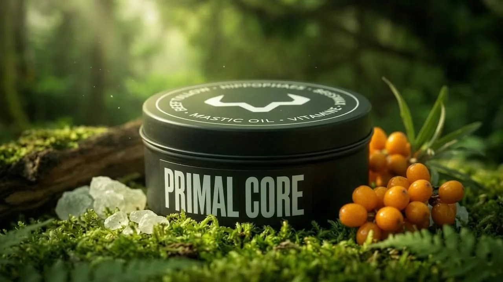

Θέλεις να δεις
το πρόσωπό σου
απαλό και
ενυδατωμένο;
Αναπτύσσουμε ένα ανδρικό face balm με βάση το βόειο στέαρ. Λίγα συστατικά. Μια απλή καθημερινή συνήθεια.
Μπες στη λίστα αναμονής Γνώρισε τα συστατικάΗ δύναμη
της απλότητας.
Παραδοσιακές πρώτες ύλες.
Σύγχρονη προσέγγιση στην περιποίηση.
Ένα face balm που σχεδιάζεται για την καθημερινή μαλακτική φροντίδα. Χωρίς περίπλοκες ρουτίνες και χωρίς υπερβολικές υποσχέσεις.
Το PRIMAL CORE βρίσκεται υπό ανάπτυξη. Η τελική σύνθεση, οι ιδιότητες και η ημερομηνία κυκλοφορίας θα ανακοινωθούν μετά την ολοκλήρωση των απαραίτητων ελέγχων.

5 συστατικά.
Με συγκεκριμένο ρόλο.
Η σύνθεση βρίσκεται υπό ανάπτυξη. Η τελική σύνθεση και τα χαρακτηριστικά του προϊόντος θα οριστικοποιηθούν μετά τους απαραίτητους ελέγχους.
- Βόειο στέαρBeef tallow
- Το βόειο λίπος (beef tallow) θρέφει εντατικά και επανορθώνει τον δερματικό φραγμό, προσφέροντας βαθιά ενυδάτωση χάρη στα λιπαρά οξέα και τις βιταμίνες που μοιάζουν με τα φυσικά λιπίδια της επιδερμίδας.
- ΙπποφαέςSea buckthorn oil
- Το έλαιο ιπποφαούς αναπλάθει σε βάθος και χαρίζει λάμψη στην επιδερμίδα, καταπολεμώντας τη γήρανση και τις φλεγμονές χάρη στην υψηλή του περιεκτικότητα σε βιταμίνες και ωμέγα λιπαρά οξέα.
- ΜελισσοκέριBeeswax
- Το μελισσοκέρι δημιουργεί ένα προστατευτικό φιλμ στην επιδερμίδα που κλειδώνει την υγρασία και καταπραΰνει τους ερεθισμούς, αφήνοντας το πρόσωπο απαλό και ενυδατωμένο.
- Έλαιο τζοτζόμπαJojoba oil
- Το έλαιο τζοτζόμπα ενυδατώνει σε βάθος και ρυθμίζει τη λιπαρότητα της επιδερμίδας, μιμούμενο το φυσικό σμήγμα χωρίς να φράζει τους πόρους.
- Βιταμίνη ΕTocopherol
- Η βιταμίνη Ε προστατεύει την επιδερμίδα από τις ελεύθερες ρίζες και την πρόωρη γήρανση, ενισχύοντας τον δερματικό φραγμό και κλειδώνοντας την υγρασία για απαλό και ελαστικό δέρμα.

Τα οφέλη στην επιδερμίδα σου.
- ΛΙΓΟΤΕΡΕΣ ΡΥΤΙΔΕΣ
- Θα παρατηρήσεις μείωση στην όψη των λεπτών γραμμών, ενώ το δέρμα σου θα δείχνει ορατά πιο λείο.
- ΕΛΑΣΤΙΚΟΤΗΤΑ
- Με τακτική χρήση, θα δεις το δέρμα σου να γίνεται πιο ελαστικό και να δείχνει πιο ξεκούραστο.
- ΛΕΙΑ ΥΦΗ
- Θα νιώσεις την επιδερμίδα σου πολύ πιο απαλή μέσα στη μέρα και θα παρατηρήσεις βελτίωση στη συνολική της όψη.
Μάθε πρώτος
για την κυκλοφορία.
Το πρώτο μας face balm βρίσκεται υπό ανάπτυξη. Άφησε το email σου για να λάβεις νέα για την κυκλοφορία του.
Έχεις κάποια ερώτηση; Γράψε μαςΣυχνές ερωτήσεις.
Πότε θα κυκλοφορήσει το PRIMAL CORE;
Το προϊόν βρίσκεται υπό ανάπτυξη. Η ημερομηνία κυκλοφορίας και τα τελικά χαρακτηριστικά θα ανακοινωθούν όταν ολοκληρωθούν οι απαραίτητοι έλεγχοι. Μπορείς να εγγραφείς για ενημερώσεις κυκλοφορίας.
Πώς χρησιμοποιείται ένα face balm;
Γενικά, ένα balm απλώνεται σε μικρή ποσότητα σε καθαρή επιδερμίδα. Οι ειδικές οδηγίες του PRIMAL CORE θα οριστικοποιηθούν με την τελική σύνθεση. Για εξωτερική χρήση μόνο. Απόφυγε την περιοχή των ματιών και σταμάτησε τη χρήση αν παρατηρήσεις ερεθισμό.
Είναι κατάλληλο για το δικό μου δέρμα;
Η καταλληλότητα εξαρτάται από τη συνολική σύνθεση και τις ανάγκες της επιδερμίδας σου. Δεν έχει ακόμη επιβεβαιωθεί συγκεκριμένη καταλληλότητα του PRIMAL CORE. Αν έχεις δερματική πάθηση ή αλλεργίες, ζήτησε συμβουλή δερματολόγου.
Ποια συστατικά εξετάζετε;
Η υπό ανάπτυξη σύνθεση βασίζεται σε βόειο στέαρ, έλαιο ιπποφαούς, μελισσοκέρι, έλαιο τζοτζόμπα και βιταμίνη Ε. Η οριστική λίστα INCI θα δημοσιευτεί πριν από την κυκλοφορία.
Μπορώ να παραγγείλω τώρα;
Δεν δεχόμαστε παραγγελίες ή πληρωμές σε αυτή τη φάση. Η λίστα αναμονής αφορά μόνο ενημερώσεις κυκλοφορίας και δεν αποτελεί προπαραγγελία.